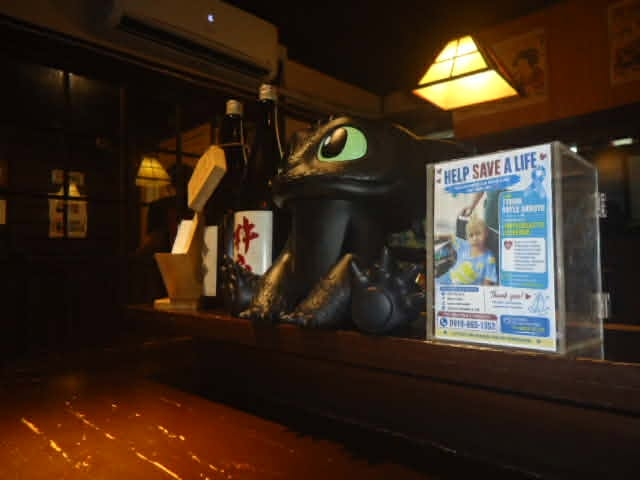
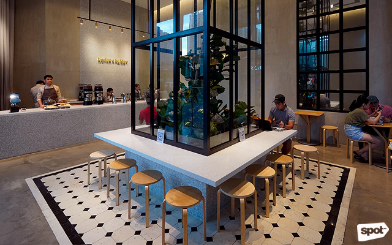

Pasay Coffee Corners
A little guide to the coffee corners of Pasay, where warm cups,
quiet tables, and gentle conversations turn ordinary days into
moments worth remembering.
Jefferson De Leon
I have always found something comforting about coffee shops—the
soft hum of conversations, the scent of freshly brewed coffee,
and the feeling of having nowhere else to be for a while. Through
this guide, I want to share the coffee spots around Pasay
that I find worth visiting, whether you are looking for a quiet
place to study, a cozy corner to gather your thoughts, or simply
somewhere to sit with good coffee and good company. Every café
has its own little story, and this guide is my way of collecting
some of those stories, one cup at a time.

My Top Coffee Picks
Gala Food Park
Pasay City, near SM Mall of Asia
A lively Japanese-themed food park where food, drinks, and
colorful surroundings come together under one roof. I recommend
Gala Food Park for days when coffee alone is not enough—for
moments when you want to wander, take pictures, try something
new, and share a long conversation with friends. Its playful
atmosphere makes an ordinary food trip feel a little more like
an adventure.

Because Coffee
Makati City
A welcoming place for a quiet break when the city feels a little
too busy. I like the idea of stopping here with a cup in hand,
letting the noise fade into the background, and giving yourself
a moment to simply breathe. It is the kind of coffee stop that
reminds you that you do not always need a reason to slow down.

But First, Coffee
SM Mall of Asia, Pasay City
A familiar coffee stop for those moments when you need a little
comfort before continuing with the day. Whether you are meeting
a friend, taking a break from shopping, or simply craving a
cold coffee after walking around the city, it is a simple place
to pause and enjoy a few quiet minutes before heading back out.